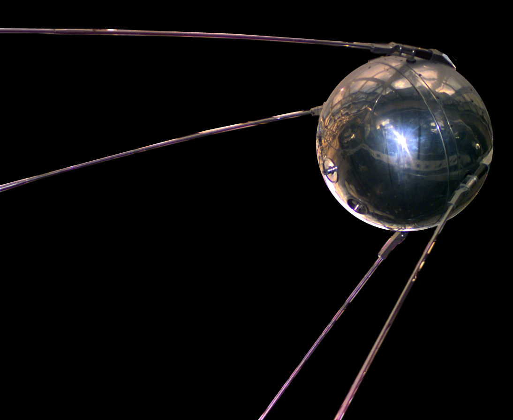

1957
Sputnik 1: o começo da era espacial
Lançado pela União Soviética, o Sputnik 1 se tornou o primeiro satélite artificial a orbitar a Terra. Seu lançamento marcou o início da corrida espacial e mostrou que era possível colocar objetos em órbita.